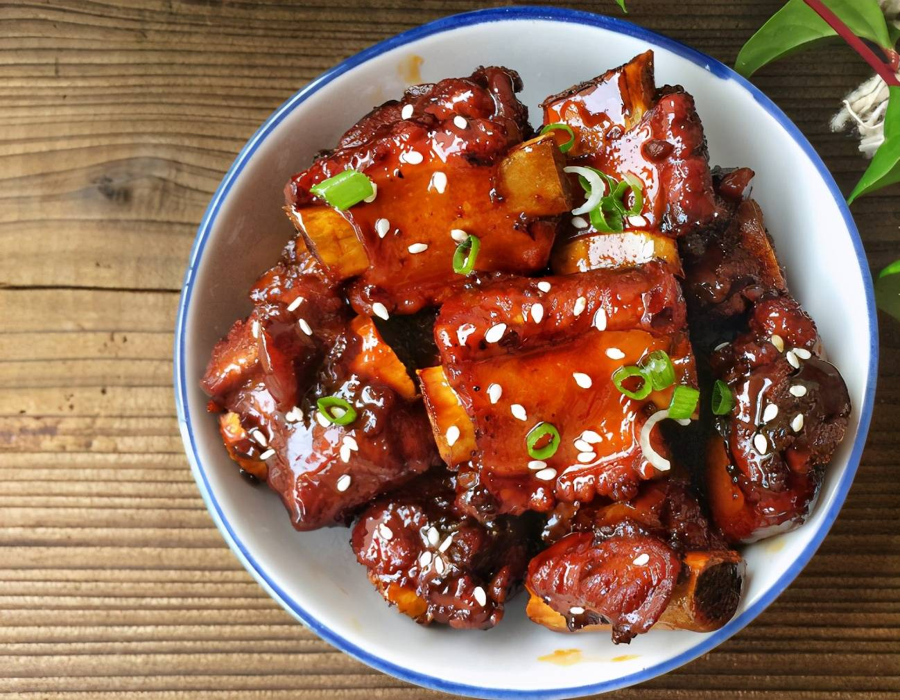

Recipe for Sweet & Sour Ribs

Ingredients:
- Ribs
- Pineapple
- Eggs
- Sugar
- Vinegar
- Tomato Sause
- White Sesame
- Salt
- Starchy Flour
- Light Soy Sause
- Cooking Oil
Instructions:
-
Cure the ribs.
- Cut the ribs into smaller pieces so the ribs can be better flavoured.
- Pur ribs, egg liquid, sault, starchy flour, light soy sauce into the bowl. Stir well.
- Wait for 30 minutes.
-
Fry the cured ribs.
- After curing the ribs, heat the oil in a clean pot.
- Fry in the shallow oil for about 4-5 minutes. (They are done when they are brown)
- Remove the ribs from the heat, transfer to a clean bowl.
-
Make the sweet and sour sauce.
- Get a clean pot, place sugar, light soy sauce, tomato sauce, and 3 tablespoons of vinegar in. Also add some water (not too much).
- Cook until it turns brownly red.
-
Transfer the fried ribs into the sweet & sour sauce.
- Add the pineapple pieces.
- Mix well, use high fire to thicken the sauce until the sugar forms large bubbles in the pot, transfer out immediately.
- Top with white sesame, serve hot.